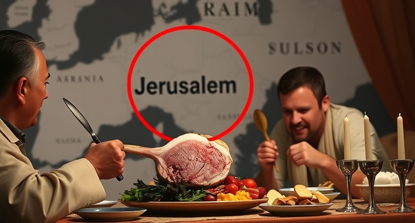

Introduction
The feasts are indeed wonderful and deeply significant, given by God for His people to celebrate. However, we must not overlook the serious command attached to their observance. What happens if we choose to disregard God’s instruction and follow our own desires? Every scripture concerning the feasts clearly states that they must be kept in the place He chose—not where we see fit. And that place is Jerusalem, the city where He has chosen to put His name. To neglect this command is to act in defiance of His will.
The Commandment
1 These are the statutes and judgments, which ye shall observe to do in the land, which the Lord God of thy fathers giveth thee to possess it, all the days that ye live upon the earth.
2 Ye shall utterly destroy all the places, wherein the nations which ye shall possess served their gods, upon the high mountains, and upon the hills, and under every green tree:
3 And ye shall overthrow their altars, and break their pillars, and burn their groves with fire; and ye shall hew down the graven images of their gods, and destroy the names of them out of that place.
4 Ye shall not do so unto the Lord your God.
5 But unto the place which the Lord your God shall choose out of all your tribes to PUT HIS NAME, even unto his habitation shall ye seek, and thither thou shalt come:
6 And thither ye shall bring your burnt offerings, and your sacrifices, and your tithes, and heave offerings of your hand, and your vows, and your freewill offerings, and the firstlings of your herds and of your flocks:
7 And there ye shall eat before the Lord your God, and ye shall rejoice in all that ye put your hand unto, ye and your households, wherein the Lord thy God hath blessed thee.
8 Ye shall not do after all the things that we do here this day, every man whatsoever is right in his own eyes.
9 For ye are not as yet come to the rest and to the inheritance, which the Lord your God giveth you.
10 But when ye go over Jordan, and dwell in the land which the Lord your God giveth you to inherit, and when he giveth you rest from all your enemies round about, so that ye dwell in safety;
11 Then there shall be a place which the Lord your God shall choose to CAUSE HIS NAME TO DWELL there; thither shall ye bring all that I command you; your burnt offerings, and your sacrifices, your tithes, and the heave offering of your hand, and all your choice vows which ye vow unto the Lord:
12 And ye shall rejoice before the Lord your God, ye, and your sons, and your daughters, and your menservants, and your maidservants, and the Levite that is within your gates; forasmuch as he hath no part nor inheritance with you.
13 Take heed to thyself that thou offer NOT thy burnt offerings in every place that thou seest:
14 But in the place which the Lord shall choose in one of thy tribes, there thou shalt offer thy burnt offerings, and there thou shalt do all that I command thee.
15 Notwithstanding thou mayest kill and eat flesh in all thy gates, whatsoever thy soul LUSTETH AFTER, according to the blessing of the Lord thy God which he hath given thee: the unclean and the clean may eat thereof, as of the roebuck, and as of the hart.
16 Only ye shall not eat the blood; ye shall pour it upon the earth as water.
17 Thou mayest NOT eat within thy gates the tithe of thy corn, or of thy wine, or of thy oil, or the firstlings of thy herds or of thy flock, nor any of thy vows which thou vowest, nor thy freewill offerings, or heave offering of thine hand:
18 But thou MUST eat them before the Lord thy God in the place which the Lord thy God shall choose, thou, and thy son, and thy daughter, and thy manservant, and thy maidservant, and the Levite that is within thy gates: and thou shalt rejoice before the Lord thy God in all that thou puttest thine hands unto.
19 Take heed to thyself that thou forsake not the Levite as long as thou livest upon the earth.
20 When the Lord thy God shall enlarge thy border, as he hath promised thee, and thou shalt say, I will eat flesh, because thy soul longeth to eat flesh; thou mayest eat flesh, whatsoever thy soul LUSTETH AFTER.
21 If the place which the Lord thy God hath chosen to put his name there be too far from thee, then thou shalt kill of thy herd and of thy flock, which the Lord hath given thee, as I have commanded thee, and thou shalt eat in thy gates whatsoever thy soul LUSTETH AFTER.
22 Even as the roebuck and the hart is eaten, so thou shalt eat them: the unclean and the clean shall eat of them alike.
23 Only be sure that thou eat not the blood: for the blood is the life; and thou mayest not eat the life with the flesh.
24 Thou shalt not eat it; thou shalt pour it upon the earth as water.
25 Thou shalt not eat it; that it may go well with thee, and with thy children after thee, when thou shalt do that which is right in the sight of the Lord.
26 Only thy holy things which thou hast, and thy vows, thou shalt take, and go unto the place which the Lord shall choose:
27 And thou shalt offer thy burnt offerings, the flesh and the blood, upon the altar of the Lord thy God: and the blood of thy sacrifices shall be poured out upon the altar of the Lord thy God, and thou shalt eat the flesh.
28 Observe and hear all these words which I command thee, that it may go well with thee, and with thy children after thee for ever, when thou doest that which is good and right in the sight of the Lord thy God.
29 When the Lord thy God shall cut off the nations from before thee, whither thou goest to possess them, and thou succeedest them, and dwellest in their land;
30 Take heed to thyself that thou be not snared by following them, after that they be destroyed from before thee; and that thou enquire not after their gods, saying, How did these nations serve their gods? even so will I do likewise.
31 Thou shalt not do so unto the Lord thy God: for every abomination to the Lord, which he hateth, have they done unto their gods; for even their sons and their daughters they have burnt in the fire to their gods.
32 What thing soever I command you, observe to do it: thou shalt not add thereto, nor diminish from it.
What is this saying?
- Bring all the sacrifices and offerings to the place that God will choose to put his name once you are dwelling safely
- If you or a gentile are too far from that place, you can eat whatever you desire
22 Thou shalt truly tithe all the increase of thy seed, that the field bringeth forth year by year.
23 And thou shalt eat before the Lord thy God, in the place which he shall choose to place his name there, the tithe of thy corn, of thy wine, and of thine oil, and the firstlings of thy herds and of thy flocks; that thou mayest learn to fear the Lord thy God always.
24 And if the way be too long for thee, so that thou art not able to carry it; or if the place be too far from thee, which the Lord thy God shall choose to SET HIS NAME there, when the Lord thy God hath blessed thee:
25 Then shalt thou turn it into money, and bind up the money in thine hand, and shalt go unto the place which the Lord thy God shall choose:
26 And thou shalt bestow that money for whatsoever thy soul LUSTETH AFTER, for oxen, or for sheep, or for wine, or for strong drink, or for whatsoever thy soul DESIRETH: and thou shalt eat there before the Lord thy God, and thou shalt rejoice, thou, and thine household,
1 Observe the month of Abib, and keep the passover unto the Lord thy God: for in the month of Abib the Lord thy God brought thee forth out of Egypt by night.
2 Thou shalt therefore sacrifice the passover unto the Lord thy God, of the flock and the herd, in the place which the Lord shall choose to PLACE HIS NAME there.
3 Thou shalt eat no leavened bread with it; seven days shalt thou eat unleavened bread therewith, even the bread of affliction; for thou camest forth out of the land of Egypt in haste: that thou mayest remember the day when thou camest forth out of the land of Egypt all the days of thy life.
4 And there shall be no leavened bread seen with thee in all thy coast seven days; neither shall there any thing of the flesh, which thou sacrificedst the first day at even, remain all night until the morning.
5 Thou mayest NOT sacrifice the passover within any of thy gates, which the Lord thy God giveth thee:
6 But at the place which the Lord thy God shall choose to PLACE HIS NAME in, there thou shalt sacrifice the passover at even, at the going down of the sun, at the season that thou camest forth out of Egypt.
7 And thou shalt roast and eat it in the place which the Lord thy God shall choose: and thou shalt turn in the morning, and go unto thy tents.
8 Six days thou shalt eat unleavened bread: and on the seventh day shall be a solemn assembly to the Lord thy God: thou shalt do no work therein.
9 Seven weeks shalt thou number unto thee: begin to number the seven weeks from such time as thou beginnest to put the sickle to the corn.
10 And thou shalt keep the feast of weeks unto the Lord thy God with a tribute of a freewill offering of thine hand, which thou shalt give unto the Lord thy God, according as the Lord thy God hath blessed thee:
11 And thou shalt rejoice before the Lord thy God, thou, and thy son, and thy daughter, and thy manservant, and thy maidservant, and the Levite that is within thy gates, and the stranger, and the fatherless, and the widow, that are among you, in the place which the Lord thy God hath chosen to PLACE HIS NAME there.
12 And thou shalt remember that thou wast a bondman in Egypt: and thou shalt observe and do these statutes.
13 Thou shalt observe the feast of tabernacles seven days, after that thou hast gathered in thy corn and thy wine:
14 And thou shalt rejoice in thy feast, thou, and thy son, and thy daughter, and thy manservant, and thy maidservant, and the Levite, the stranger, and the fatherless, and the widow, that are within thy gates.
15 Seven days shalt thou keep a solemn feast unto the Lord thy God in the place which the Lord shall choose: because the Lord thy God shall bless thee in all thine increase, and in all the works of thine hands, therefore thou shalt surely rejoice.
16 Three times in a year shall all thy males appear before the Lord thy God in the place which he shall choose; in the feast of unleavened bread, and in the feast of weeks, and in the feast of tabernacles: and they shall not appear before the Lord empty:
17 Every man shall give as he is able, according to the blessing of the Lord thy God which he hath given thee.
Numbers 15:1-3,22-23,30-31
1 And the Lord spake unto Moses, saying,
2 Speak unto the children of Israel, and say unto them, When ye be come into the land of your habitations, which I give unto you,
3 And will make an offering by fire unto the Lord, a burnt offering, or a sacrifice in performing a vow, or in a freewill offering, or in your solemn feasts, to make a sweet savour unto the Lord, of the herd or of the flock:
…
22 And if ye have erred, and not observed all these commandments, which the Lord hath spoken unto Moses,
23 Even all that the Lord hath commanded you by the hand of Moses, from the day that the Lord commanded Moses, and henceforward among your generations;
… (through ignorance) …
30 But the soul that doeth ought PRESUMPTUOUSLY, whether he be born in the land, or a stranger, the same reproacheth the Lord; and that soul shall be cut off from among his people.
31 Because he hath despised the word of the Lord, and hath broken his commandment, that soul shall utterly be cut off; his iniquity shall be upon him.
Psalm 19:13 Keep back thy servant also from presumptuous sins; let them not have dominion over me: then shall I be upright, and I shall be innocent from the great transgression.
Where Did God Put His Name?
1 Kings 11:13 Howbeit I will not rend away all the kingdom; but will give one tribe to thy son for David my servant’s sake, and for JERUSALEM’s sake which I have CHOSEN.
1 Kings 11:32 (But he shall have one tribe for my servant David’s sake, and for JERUSALEM’s sake, the city which I have CHOSEN out of all the tribes of Israel:)
1 Kings 11:36 And unto his son will I give one tribe, that David my servant may have a light alway before me in JERUSALEM, the city which I have chosen me to put MY NAME there.
1 Kings 14:21 And Rehoboam the son of Solomon reigned in Judah. Rehoboam was forty and one years old when he began to reign, and he reigned seventeen years in JERUSALEM, the city which the Lord did choose out of all the tribes of Israel, to put HIS NAME there. And his mother’s name was Naamah an Ammonitess.
2 Kings 21:4 And he built altars in the house of the Lord, of which the Lord said, In JERUSALEM will I put MY NAME.
2 Kings 21:7 And he set a graven image of the grove that he had made in the house, of which the Lord said to David, and to Solomon his son, In this house, and in JERUSALEM, which I have chosen out of all tribes of Israel, will I put MY NAME for ever.
2 Kings 23:27 And the Lord said, I will remove Judah also out of my sight, as I have removed Israel, and will cast off this city JERUSALEM which I have chosen, and the house of which I said, MY NAME shall be there.
2 Chronicles 6:6 But I have chosen JERUSALEM, that MY NAME might be there; and have chosen David to be over my people Israel.
2 Chronicles 12:13 So king Rehoboam strengthened himself in JERUSALEM, and reigned: for Rehoboam was one and forty years old when he began to reign, and he reigned seventeen years in JERUSALEM, the city which the Lord had chosen out of all the tribes of Israel, to put HIS NAME there. And his mother’s name was Naamah an Ammonitess.
2 Chronicles 33:4 Also he built altars in the house of the Lord, whereof the Lord had said, In JERUSALEM shall MY NAME be for ever.
2 Chronicles 33:7 And he set a carved image, the idol which he had made, in the house of God, of which God had said to David and to Solomon his son, In this house, and in JERUSALEM, which I have chosen before all the tribes of Israel, will I put MY NAME for ever:
13 For the Lord hath chosen ZION; he hath desired it for his habitation.
14 This is my rest for ever: here will I dwell; for I have desired it.
Isaiah 2:3 And many people shall go and say, Come ye, and let us go up to the mountain of the Lord, to the house of the God of Jacob; and he will teach us of his ways, and we will walk in his paths: for out of ZION shall go forth the law, and the word of the Lord from JERUSALEM.
Jeremiah 3:17 At that time they shall call JERUSALEM the throne of the Lord; and all the nations shall be gathered unto it, to THE NAME OF THE LORD, to JERUSALEM: neither shall they walk any more after the imagination of their evil heart.
Zechariah 1:17 Cry yet, saying, Thus saith the Lord of hosts; My cities through prosperity shall yet be spread abroad; and the Lord shall yet comfort Zion, and shall yet CHOOSE JERUSALEM.
Zechariah 2:12 And the Lord shall inherit Judah his portion in the holy land, and shall choose JERUSALEM again.
Zechariah 3:2 And the Lord said unto Satan, The Lord rebuke thee, O Satan; even the Lord that hath CHOSEN JERUSALEM rebuke thee: is not this a brand plucked out of the fire?
Zechariah 8:3 Thus saith the Lord; I am returned unto Zion, and will dwell in the midst of JERUSALEM: and JERUSALEM shall be called a city of truth; and the mountain of the Lord of hosts the holy mountain.
Matthew 5:35 Nor by the earth; for it is his footstool: neither by JERUSALEM; for it is the city of the great King.
Revelation 3:12 Him that overcometh will I make a pillar in the temple of my God, and he shall go no more out: and I will write upon him the name of my God, and THE NAME of the city of my God, which is new JERUSALEM, which cometh down out of heaven from my God: and I will write upon him my new name.
Revelation 21:2 And I John saw the holy city, new JERUSALEM, coming down from God out of heaven, prepared as a bride adorned for her husband.
Where Was the Custom to Keep the Feasts?
41 Now his parents went to JERUSALEM every year at the feast of the passover.
42 And when he was twelve years old, they went up to JERUSALEM after the custom of the feast.
John 2:23 Now when he was in JERUSALEM at the passover, in the feast day, many believed in his name, when they saw the miracles which he did.
John 4:45 Then when he was come into Galilee, the Galilaeans received him, having seen all the things that he did at JERUSALEM at the feast: for they also went unto the feast.
John 5:1 After this there was a feast of the Jews; and Yeshua went up to JERUSALEM.
John 12:12 On the next day much people that were come to the feast, when they heard that Yeshua was coming to JERUSALEM,
1 And when the day of Pentecost was fully come, they were all with one accord in one place.
2 And suddenly there came a sound from heaven as of a rushing mighty wind, and it filled all the house where they were sitting.
3 And there appeared unto them cloven tongues like as of fire, and it sat upon each of them.
4 And they were all filled with the Holy Ghost, and began to speak with other tongues, as the Spirit gave them utterance.
5 And there were dwelling at JERUSALEM Jews, devout men, out of every nation under heaven.
Acts 18:21 But bade them farewell, saying, I must by all means keep this feast that cometh in JERUSALEM: but I will return again unto you, if God will. And he sailed from Ephesus.
Lying Pen of Scribes
Jeremiah 8:8 How do ye say, We are wise, and the law of the Lord is with us? Lo, certainly in vain made he it; the pen of the scribes is in vain.
Acts 18:21 But bade them farewell, saying, I must by all means keep this feast that cometh in JERUSALEM: but I will return again unto you, if God will. And he sailed from Ephesus.
Unfortunately, almost all translations today have removed that Paul had to go to Jerusalem to keep the feast. However, this is the smoking gun that there is something up because everyone uses this verse to point at it being okay to keep the feasts outside of Jerusalem. Here are some other common translations:
Acts 18:21 (NIV) But as he left, he promised, “I will come back if it is God’s will.” Then he set sail from Ephesus.
Acts 18:21 (NASB) but took leave of them and said, “I will return to you again if God wills,” and he set sail from Ephesus.
Acts 18:21 (ESV) But on taking leave of them he said, “I will return to you if God wills,” and he set sail from Ephesus.
Acts 18:21 (DRA) But taking his leave, and saying: I will return to you again, God willing, he departed from Ephesus.
Now ask yourself why these Jewish inspired New Testament translations omit that Paul had to go back to Jerusalem.
Acts 18:21 (CJB) however, in his farewell he said, “God willing, I will come back to you.” Then he set sail from Ephesus.
Acts 18:21 (OJB) But taking leave of them, he said, “I will return again im yirtzeh Hashem (G-d willing).” Then Rav Sha’ul set sail from Ephesus.
Where Did an Early Christian Understand to Do the Feasts?
1 Let each of you, brethren, in his own order give thanks unto God, maintaining a good conscience and not transgressing the appointed rule of his service, but acting with all seemliness.
2 Not in every place, brethren, are the continual daily sacrifices offered, or the freewill offerings, or the sin offerings and the trespass offerings, but in Jerusalem alone. And even there the offering is not made in every place, but before the sanctuary in the court of the altar; and this too through the high priest and the afore said ministers, after that the victim to be offered hath been inspected for blemishes.
3 They therefore who do any thing contrary to the seemly ordinance of His will receive death as the penalty.
4 Ye see, brethren, in proportion as greater knowledge hath been vouchsafed unto us, so much the more are we exposed to danger.
Read the entire book of 1 Clement.
Feasts Not Kept in Captivity
Passover (Pesach)
Date of the Feast
Leviticus 23:5 In the fourteenth day of the first month at even is the Lord’s passover.
Numbers 28:16 And in the fourteenth day of the first month is the passover of the Lord.
Therefore, passover is at the evening of the 14th day of the 1st month (Nisan / Aviv). On this day, you are to eat the passover lamb.
Feast Not Kept
1 In the third year of Cyrus king of Persia a thing was revealed unto Daniel, whose name was called Belteshazzar; and the thing was true, but the time appointed was long: and he understood the thing, and had understanding of the vision.
2 In those days I Daniel was mourning three full weeks.
3 I ate no pleasant bread, neither came flesh nor wine in my mouth, neither did I anoint myself at all, till three whole weeks were fulfilled.
4 And in the four and twentieth day of the first month, as I was by the side of the great river, which is Hiddekel;
Daniel fasted for 21 days (3 weeks) until it became the 24th day of the 1st month. That means he fasted from the 3rd day to the 24th day, which includes the passover that occurs on the 14th day.
Feast Kept After Returning
Just one of many accounts.
Luke 2:41 Now his parents went to Jerusalem every year at the feast of the passover.
Feast of Unleavened Bread (Chag HaMatzot)
Date of the Feast
5 In the fourteenth day of the first month at even is the Lord’s passover.
6 And on the fifteenth day of the same month is the feast of unleavened bread unto the Lord: seven days ye must eat unleavened bread.
16 And in the fourteenth day of the first month is the passover of the Lord.
17 And in the fifteenth day of this month is the feast: seven days shall unleavened bread be eaten.
Therefore, the feast of unleavened bread occurs from the 15th to the 21st day of the 1st month (Nisan / Aviv). During this time, you are to eat unleavened bread.
Feast Not Kept
1 In the third year of Cyrus king of Persia a thing was revealed unto Daniel, whose name was called Belteshazzar; and the thing was true, but the time appointed was long: and he understood the thing, and had understanding of the vision.
2 In those days I Daniel was mourning three full weeks.
3 I ate no pleasant bread, neither came flesh nor wine in my mouth, neither did I anoint myself at all, till three whole weeks were fulfilled.
4 And in the four and twentieth day of the first month, as I was by the side of the great river, which is Hiddekel;
Daniel fasted for 21 days (3 weeks) until it became the 24th day of the 1st month. That means he fasted from the 3rd day to the 24th day, which includes the feast of unleavened bread that occurs from the 15th to the 21nd day of the 1st month.
Feast Kept After Returning
Note the Jews had the wrong dates.
Mark 14:1 After two days was the feast of the passover, and of unleavened bread: and the chief priests and the scribes sought how they might take him by craft, and put him to death.
Feast of Firstfruits (Yom HaBikkurim)
Date of the Feast
Leviticus 23:5-7,10-14
5 In the fourteenth day of the first month at even is the Lord’s passover.
6 And on the fifteenth day of the same month is the feast of unleavened bread unto the Lord: seven days ye must eat unleavened bread.
7 In the first day ye shall have an holy convocation: ye shall do no servile work therein.
…
10 Speak unto the children of Israel, and say unto them, When ye be come into the land which I give unto you, and shall reap the harvest thereof, then ye shall bring a sheaf of the firstfruits of your harvest unto the priest:
11 And he shall wave the sheaf before the Lord, to be accepted for you: on the morrow after the sabbath the priest shall wave it.
12 And ye shall offer that day when ye wave the sheaf an he lamb without blemish of the first year for a burnt offering unto the Lord.
13 And the meat offering thereof shall be two tenth deals of fine flour mingled with oil, an offering made by fire unto the Lord for a sweet savour: and the drink offering thereof shall be of wine, the fourth part of an hin.
14 And ye shall eat neither bread, nor parched corn, nor green ears, until the selfsame day that ye have brought an offering unto your God: it shall be a statute for ever throughout your generations in all your dwellings.
Therefore, the feast of firstfruits is the 16th day of the 1st month (Nisan / Aviv).
Feast Not Kept
1 In the third year of Cyrus king of Persia a thing was revealed unto Daniel, whose name was called Belteshazzar; and the thing was true, but the time appointed was long: and he understood the thing, and had understanding of the vision.
2 In those days I Daniel was mourning three full weeks.
3 I ate no pleasant bread, neither came flesh nor wine in my mouth, neither did I anoint myself at all, till three whole weeks were fulfilled.
4 And in the four and twentieth day of the first month, as I was by the side of the great river, which is Hiddekel;
Daniel fasted for 21 days (3 weeks) until it became the 24th day of the 1st month. Again, he didn’t observe this feast as with the others in this month.
Feast of Weeks (Shavuot / Pentecost)
Date of the Feast
15 And ye shall count unto you from the morrow after the sabbath, from the day that ye brought the sheaf of the wave offering; seven sabbaths shall be complete:
16 Even unto the morrow after the seventh sabbath shall ye number fifty days; and ye shall offer a new meat offering unto the Lord.
17 Ye shall bring out of your habitations two wave loaves of two tenth deals; they shall be of fine flour; they shall be baken with leaven; they are the firstfruits unto the Lord.
18 And ye shall offer with the bread seven lambs without blemish of the first year, and one young bullock, and two rams: they shall be for a burnt offering unto the Lord, with their meat offering, and their drink offerings, even an offering made by fire, of sweet savour unto the Lord.
19 Then ye shall sacrifice one kid of the goats for a sin offering, and two lambs of the first year for a sacrifice of peace offerings.
20 And the priest shall wave them with the bread of the firstfruits for a wave offering before the Lord, with the two lambs: they shall be holy to the Lord for the priest.
21 And ye shall proclaim on the selfsame day, that it may be an holy convocation unto you: ye shall do no servile work therein: it shall be a statute for ever in all your dwellings throughout your generations.
22 And when ye reap the harvest of your land, thou shalt not make clean riddance of the corners of thy field when thou reapest, neither shalt thou gather any gleaning of thy harvest: thou shalt leave them unto the poor, and to the stranger: I am the Lord your God.
8 Six days thou shalt eat unleavened bread: and on the seventh day shall be a solemn assembly to the Lord thy God: thou shalt do no work therein.
9 Seven weeks shalt thou number unto thee: begin to number the seven weeks from such time as thou beginnest to put the sickle to the corn.
10 And thou shalt keep the feast of weeks unto the Lord thy God with a tribute of a freewill offering of thine hand, which thou shalt give unto the Lord thy God, according as the Lord thy God hath blessed thee:
Therefore, the feast of weeks is on the 6th day of the 3rd month (Sivan).
Feast Not Kept
Ezekiel 31:1 And it came to pass in the eleventh year, in the third month, in the first day of the month, that the word of the Lord came unto me, saying,
…
Ezekiel 32:1 And it came to pass in the twelfth year, in the twelfth month, in the first day of the month, that the word of the Lord came unto me, saying,
A few days before the feast of weeks, there is a complete lack of any mention of the feast.
Feast of Trumpets (Yom Teruah / Rosh Hashanah)
Date of the Feast
24 Speak unto the children of Israel, saying, In the seventh month, in the first day of the month, shall ye have a sabbath, a memorial of blowing of trumpets, an holy convocation.
25 Ye shall do no servile work therein: but ye shall offer an offering made by fire unto the Lord.
1 And in the seventh month, on the first day of the month, ye shall have an holy convocation; ye shall do no servile work: it is a day of blowing the trumpets unto you.
2 And ye shall offer a burnt offering for a sweet savour unto the Lord; one young bullock, one ram, and seven lambs of the first year without blemish:
3 And their meat offering shall be of flour mingled with oil, three tenth deals for a bullock, and two tenth deals for a ram,
4 And one tenth deal for one lamb, throughout the seven lambs:
5 And one kid of the goats for a sin offering, to make an atonement for you:
6 Beside the burnt offering of the month, and his meat offering, and the daily burnt offering, and his meat offering, and their drink offerings, according unto their manner, for a sweet savour, a sacrifice made by fire unto the Lord.
Therefore, the feast of trumpets is on the 1st day of the 7th month (Tishrei). On this day you are to blow the trumpt and offer a burnt offering.
Feast Not Kept
No mention.
Day of Atonement (Yom Kippur)
Date of the Feast
27 Also on the tenth day of this seventh month there shall be a day of atonement: it shall be an holy convocation unto you; and ye shall afflict your souls, and offer an offering made by fire unto the Lord.
28 And ye shall do no work in that same day: for it is a day of atonement, to make an atonement for you before the Lord your God.
29 For whatsoever soul it be that shall not be afflicted in that same day, he shall be cut off from among his people.
30 And whatsoever soul it be that doeth any work in that same day, the same soul will I destroy from among his people.
31 Ye shall do no manner of work: it shall be a statute for ever throughout your generations in all your dwellings.
32 It shall be unto you a sabbath of rest, and ye shall afflict your souls: in the ninth day of the month at even, from even unto even, shall ye celebrate your sabbath.
Numbers 29:7 And ye shall have on the tenth day of this seventh month an holy convocation; and ye shall afflict your souls: ye shall not do any work therein:
Therefore, the day of atonment is from the evening of the 9th to the evening of the 10th day of the 7th month (Tishrei).
Feast Not Kept
No mention.
Feast of Tabernacles (Sukkot)
34 Speak unto the children of Israel, saying, The fifteenth day of this seventh month shall be the feast of tabernacles for seven days unto the Lord.
35 On the first day shall be an holy convocation: ye shall do no servile work therein.
36 Seven days ye shall offer an offering made by fire unto the Lord: on the eighth day shall be an holy convocation unto you; and ye shall offer an offering made by fire unto the Lord: it is a solemn assembly; and ye shall do no servile work therein.
37 These are the feasts of the Lord, which ye shall proclaim to be holy convocations, to offer an offering made by fire unto the Lord, a burnt offering, and a meat offering, a sacrifice, and drink offerings, every thing upon his day:
38 Beside the sabbaths of the Lord, and beside your gifts, and beside all your vows, and beside all your freewill offerings, which ye give unto the Lord.
39 Also in the fifteenth day of the seventh month, when ye have gathered in the fruit of the land, ye shall keep a feast unto the Lord seven days: on the first day shall be a sabbath, and on the eighth day shall be a sabbath.
40 And ye shall take you on the first day the boughs of goodly trees, branches of palm trees, and the boughs of thick trees, and willows of the brook; and ye shall rejoice before the Lord your God seven days.
41 And ye shall keep it a feast unto the Lord seven days in the year. It shall be a statute for ever in your generations: ye shall celebrate it in the seventh month.
42 Ye shall dwell in booths seven days; all that are Israelites born shall dwell in booths:
43 That your generations may know that I made the children of Israel to dwell in booths, when I brought them out of the land of Egypt: I am the Lord your God.
Therefore, the feast of tabernacles is from the 15th to the 21st day of the 7th month (Tishrei).
Feast Not Kept
No mention. Potentially Jeremiah 41.
Feast Kept After Returning
13 And on the second day were gathered together the chief of the fathers of all the people, the priests, and the Levites, unto Ezra the scribe, even to understand the words of the law.
14 And they found written in the law which the Lord had commanded by Moses, that the children of Israel should dwell in booths in the feast of the seventh month:
15 And that they should publish and proclaim in all their cities, and in Jerusalem, saying, Go forth unto the mount, and fetch olive branches, and pine branches, and myrtle branches, and palm branches, and branches of thick trees, to make booths, as it is written.
16 So the people went forth, and brought them, and made themselves booths, every one upon the roof of his house, and in their courts, and in the courts of the house of God, and in the street of the water gate, and in the street of the gate of Ephraim.
17 And all the congregation of them that were come again out of the captivity made booths, and sat under the booths: for since the days of Jeshua the son of Nun unto that day had not the children of Israel done so. And there was very great gladness.
18 Also day by day, from the first day unto the last day, he read in the book of the law of God. And they kept the feast seven days; and on the eighth day was a solemn assembly, according unto the manner.
Another account (Very Important).
1 And when the seventh month was come, and the children of Israel were in the cities, the people gathered themselves together as one man to Jerusalem.
2 Then stood up Jeshua the son of Jozadak, and his brethren the priests, and Zerubbabel the son of Shealtiel, and his brethren, and builded the altar of the God of Israel, to offer burnt offerings thereon, as it is written in the law of Moses the man of God.
3 And they set the altar upon his bases; for fear was upon them because of the people of those countries: and they offered burnt offerings thereon unto the Lord, even burnt offerings morning and evening.
4 They kept also the feast of tabernacles, as it is written, and offered the daily burnt offerings by number, according to the custom, as the duty of every day required;
5 And afterward offered the continual burnt offering, both of the new moons, and of all the set feasts of the Lord that were consecrated, and of every one that willingly offered a freewill offering unto the Lord.
6 From the first day of the seventh month began they to offer burnt offerings unto the Lord. But the foundation of the temple of the Lord was not yet laid.
Notice how Nehemiah and Ezra clearly proclaim that they need to keep the feast. Ezra saying they must keep all the feasts and offer all the burnt offerings that were commanded.